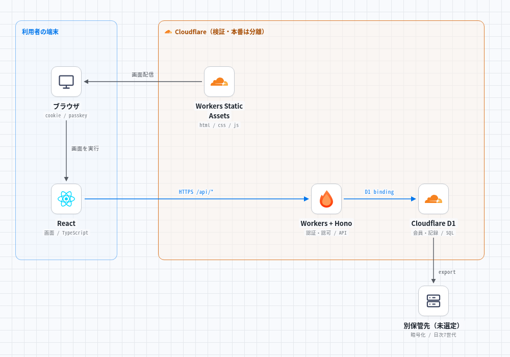
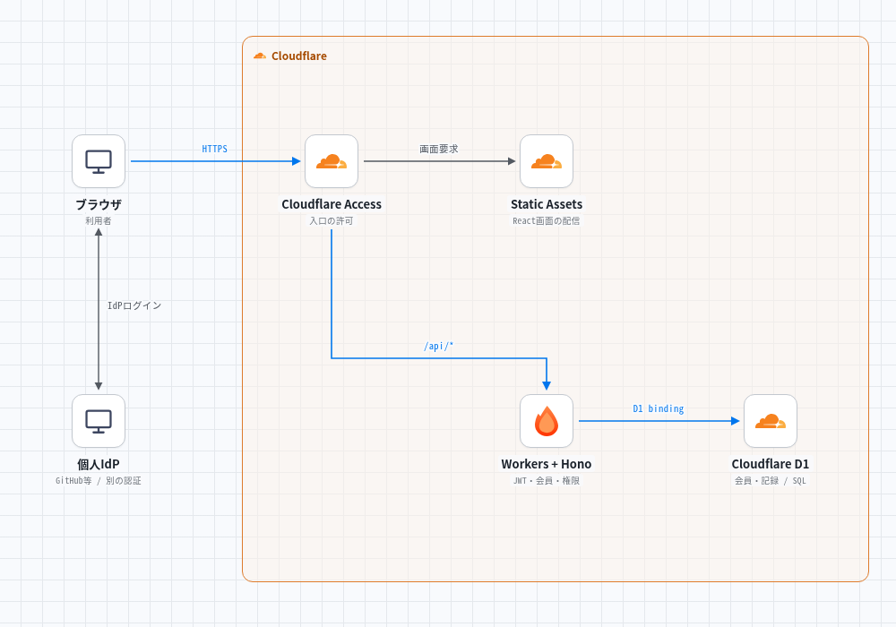

DOUKIN / BLUEPRINT
全体設計案を、
1ページで確認。
基本構成とZero Trustをまとめて確認。通常は4項目だけ、細かな仕様と出典は下の補足から読めます。

1. 構成はこれだけ
一般会員の経路：メール入力をアプリで求めず、パスキーと保持セッションで利用。
- React画面TypeScript＋Vite
- 招待＋パスキー端末別Cookieで保持
- Workers＋Hono会員・所有者を毎回確認
- Cloudflare D1会員・記録・体重を保存
運営者の経路：個人IdP → Cloudflare Access → アプリ認証・運営役割 → 管理API。アプリの検証環境もAccessで保護し、本番とDBを分けます。
Accessは入口の確認、Honoは記録ごとの権限確認、D1は保存担当です。
2. 使う人から見た仕様
| 項目 | 推奨する動き |
|---|---|
| 参加・日々の利用 | 個別招待＋パスキー。通常の再訪はログイン保持で入力を省く。 |
| 筋トレ記録 | 種目・重量・回数・セットを保存。初期は本人のみ、共有は明示操作。 |
| 体重・写真 | 体重を実装する場合は本人専用の別データ。写真アップロードは後回し。 |
| 紛失・退会 | 予備パスキー／復旧コードで復旧。退会・失効時は会員とセッションを無効化。 |
| 情報・復元 | 氏名・メールの対応表をアプリに持たない。日次の暗号化退避と復元試験を用意。 |
3. Zero Trustは、どこまで使う？
| 案 | 保護する範囲 | 向いている条件 |
|---|---|---|
| 推奨：運営・検証だけ | 管理画面・管理API・アプリ検証環境をAccessで保護 | 一般会員の手間と本人情報の追加を抑えたい。 |
| 代替：全アプリ | 全会員がAccess → アプリ認証の順に通過 | 全員の個人IdP利用と二つのログイン・復旧を許容できる。 |
個人GitHub等のIdPはメール等を扱い得ます。「アプリでメールを持たない」と「認証基盤にも持たない」は別です。元のN1構成はAccessなしでも比較基準として残します。
4. 実装前に確認する4点
| 確認点 | 判断材料 |
|---|---|
| Workers互換性 | Hono・パスキー・JWT検証を実ランタイムで試す。FreeのCPU 10 ms内に収まるか実測。 |
| Accessの入口 | 管理API・別URL・プレビューにも抜け道を作らない。Static Assetsではctx.accessに頼らずJWT検証を設計。 |
| 契約・人数 | Zero Trust Freeは50ユーザー枠、支払情報登録が必要。Workers/D1・ドメイン・退避費は別に確認。 |
| 復旧・期限切れ | スマホ2種で紛失・失効・再ログインを試す。日次退避から削除済み情報を復活させず復元できること。 |
必要なときだけ：構成図・技術仕様・公式出典
推奨案を全部つなぐと、こうなる
同期が筋トレを続けるための、招待制の記録・共有アプリ。自分の記録は自分だけに保存し、見せたい記録だけ同期へ共有します。毎日の利用はログイン保持で手間を減らします。
| 論点 | 統合する仕様案 | 位置づけ |
|---|---|---|
| 参加・認証 | 個別招待＋パスキー。内部会員IDで履歴を継続 | 元資料 N1 |
| 画面・API・DB | React＋TypeScript＋Vite → Workers Static Assets／Hono → Cloudflare D1 | 元資料の推奨 |
| 情報最小化 | 仮名ID・専用表示名。氏名／メール／電話の対応表を持たない | 既存追加調査 |
| ログイン保持 | 端末別セッション＋HttpOnly Cookie | 既存追加調査 |
| 写真・拡張 | 写真は初期対象外。固定アイコンを使用 | 元資料の推奨 |
| 想定規模 | 数十人・保守3人を比較条件とする | 実際の体制ではなく仮定 |
どのサービスが、何を担当する？


実線は配信・要求・退避の方向。ブラウザからD1へ直接接続しません。同じホストの /api/* を必ずWorkerへ送り、SPAのHTMLへフォールバックさせない構成です。
| 具体名 | 担当 | 担当しないもの |
|---|---|---|
| Cloudflare Workers Static Assets | Viteで作った静的ファイルを配信 | データの認可・保存 |
| Cloudflare Workers ＋ Hono | API、招待、パスキー検証、セッション・会員状態の検査 | Node.js常駐サーバーの運用 |
| Cloudflare D1 | SQLite互換のSQLデータベース。永続データの正本 | パスキー秘密鍵・写真の保存 |
| 利用者の認証器／パスキー管理元 | 秘密鍵の管理と署名。生体認証は端末側 | 生体情報をdoukinに渡すこと |
| 外部実行ジョブ＋暗号化保管先 | DB export・成功監視・復元用保管 | 製品・契約の選定は残る |
画面と機能の範囲
| 画面 | できること | 表示・挙動の提案 |
|---|---|---|
| 記録入力 | 実施日、種目、重量、回数、セットの保存 | 保存前に「本人のみ」を表示。共有は別操作 |
| 自分の履歴 | 20件単位の取得、編集・削除 | 通信失敗時は保存完了と表示しない。再送時の重複を防ぐ |
| 同期の記録 | 承認済み会員の共有記録を読む | 共有解除後の新規取得を拒否。既に見た内容は回収できない |
| 体重 | 本人の履歴を別領域に保存・表示 | トレーニング共有で体重を共有しない |
| 設定・端末 | パスキー追加、端末別ログアウト、全端末失効 | 重要変更は新しいパスキー認証を要求 |
| 運営画面 | 招待、会員失効、復旧の承認 | 非公開の記録を閲覧する一般画面は用意しない |
体重をMVPに含めるかは元資料でも別途相談項目です。本仕様案では「実装する場合も本人のみ」として設計します。リアクション、ランキング、キャラクター、オフライン編集は初期の必須範囲に追加しません。
招待・ログイン・復旧
| 場面 | 処理・保存先 | 失敗時 |
|---|---|---|
| 招待 | ランダムな招待秘密のハッシュをD1へ。連絡先は転記しない | 期限切れ・使用済み・同時引換は拒否 |
| 登録／ログイン | SimpleWebAuthnでchallenge・origin・RP ID・署名・本人確認を検証 | 失敗理由を漏らしすぎず試行を制限 |
| 登録の確定 | 招待消費と会員／公開鍵の作成を一体として扱う | 競合で複数アカウントを作らない。D1の条件付き更新とbatchを試験 |
| 普段の再訪 | Cookie → D1のセッション → 会員状態 → データ認可 | 期限切れはログインへ。同じ会員IDへ戻す |
| 全端末紛失 | 予備パスキーか単回復旧コードで元の会員へ | なければ既知の本人を確認し運営者2人で承認 |
| 復旧完了 | 古い資格情報・全セッションを失効。新しい資格情報を登録 | 本人確認の証拠も失った場合は復旧を保証できない |
期限・承認人数は元資料の提案値。認証の暗号処理を自作しません。運営復旧は仮名性と本人確認のトレードオフを伴い、連絡先名簿を新たにDBへ作らない運用にします。
ログイン保持は「端末ごとの入場証」
| 項目 | 統合仕様案 |
|---|---|
| Cookie | __Host- 接頭辞、Secure、HttpOnly、Path=/、Domainなし、SameSite=Lax。HTTPS限定 |
| サーバー側保存 | トークンのハッシュ、会員ID、端末識別用ID、作成・最終利用・絶対期限・失効日時 |
| 保持期限 | 無操作7日／絶対30日を試す。自動更新で絶対期限は延長しない |
| 共有端末 | 永続保持を選ばない。ブラウザ終了だけに頼らずサーバー期限も有効 |
| 更新要求 | Origin検証とCSRF対策。GETでデータを変更しない |
| 保管しない場所 | localStorageやURLにセッション秘密を置かない。Cookieや復旧コードをログへ出さない |
| キャッシュ | 認証APIはno-store。PWAや共有CDNに非公開レスポンスを永続保存しない |
7日・30日は既存の追加調査から統合した設計値で、安全性の保証ではありません。追加端末にCookieをコピーせず、新しいセッションを発行します。
誰が、どのデータを扱える？
| 主体 | 本人の記録 | 他人の共有記録 | 他人の非公開／体重 | 招待・失効 |
|---|---|---|---|---|
| 有効な会員 | 読む・作る・変更・削除 | 読むのみ | 不可 | 不可 |
| 運営役割を持つ会員 | 同上 | 読むのみ | 通常APIでは不可 | 役割の範囲内 |
| 未ログイン／未承認 | 不可 | 不可 | 不可 | 不可 |
| 失効した会員（旧Cookieあり） | 不可 | 不可 | 不可 | 不可 |
| 基盤管理者 | 保守上のDBアクセスが可能 | 同左 | 技術的にアクセス可能 | 基盤権限による |
すべてのAPIで会員状態、所有者、共有範囲を確認します。所有者IDはセッション由来とし、入力値を信用しません。D1にSupabaseのRLSがある前提を置かず、SQLの条件にも所有者・公開範囲を含めます。失効反映後に開始する要求は拒否し、管理者も内容を読めないE2E暗号化とは説明しません。
Cloudflare D1に持つデータ
体重はこの記録・セットの系列に含めず、会員へ直接紐付く別テーブルに保存します。すべてCloudflare D1内の論理テーブル案です。
| テーブル案 | 関係／主な列 | 守る条件 |
|---|---|---|
| members | id、専用表示名、status、role | ランダムID。利用者自身による承認・昇格は禁止 |
| credentials | members 1:N、credential_id、public_key、counter | 秘密鍵・指紋・顔画像は保存しない |
| sessions | members 1:N、token_hash、各期限、revoked_at | 端末ごとの失効。会員状態を毎回確認 |
| invites / challenges / recovery_codes | hashまたはchallenge、期限、使用状態 | 短命・単回。競合時の一回性を保証 |
| workouts → sets | members 1:N workouts、workouts 1:N sets | 記録の削除でセットが残らない整合性 |
| weight_entries | members 1:N、日付、体重 | 本人のみ。共有用クエリに混ぜない |
| audit_events / deletion_ledger | 操作主体、対象ID、日時、結果 | 秘密・記録本文を含めない。削除／失効台帳は復元対象と別に保持 |
索引案：workouts(member_id, performed_at, id)、共有一覧用(visibility, performed_at, id)、sets(workout_id)、sessions(token_hash UNIQUE)。20件のカーソル取得でも走査が20行とは限らないため、rows_readを実測します。
Workersで使える技術・注意が必要な技術
追加調査：2026-11-01（日本時間）。公式資料による対応状況と、doukinの組合せでの動作確認は別です。ビルド時のNode.jsと、本番のWorkersランタイムを区別します。
| 技術 | 動かす場所／判定 | 仕様案への反映・根拠 |
|---|---|---|
| React＋TypeScript＋Vite | 画面はブラウザ。Viteは開発・CI | 静的出力をWorkers Static Assetsへ。[W1] |
| Hono | Workers向け公式手順あり | APIの第一候補を維持。[W2] |
| SimpleWebAuthn server | 現行READMEでWorkersを対応環境に記載 | 第一候補に具体化。ただし版固定・認証器・CPUの実測は未実施。[W3] |
| D1 binding | Workerからenv.DB経由でSQL | D1 prepared statementsを基本案に。ORMは初期必須にしない。[W4] |
| Node.js npmパッケージ | 一部APIは対応、一部は部分対応やstub | import成功だけで実行可能と判断しない。推移依存も確認。[W5] |
| nodejs_compat | compatibility_dateで挙動が変わる | 公式文書では2026-08-04以後はNode互換が既定有効。旧日付ではフラグ設定を確認。[W6] |
| fs／ローカルSQLite | 仮想ファイルシステムと永続ディスクは別 | node:fsを一律非対応とは扱わない。永続データはD1へ。[W7] |
| ネイティブaddon／子プロセス依存 | 通常のWorkersにそのまま持ち込む設計は避ける | better-sqlite3、外部バイナリ実行等を前提にしない。代替と実行経路を調べる。[W5] |
| Next.js＋OpenNext | 代替の構成 | SSR要件が出たときに再比較。現案では不要な互換性確認を増やさない |
開発はCloudflare Vite pluginでWorkersランタイムに近づけます。lockfileとcompatibility_dateを固定し、更新PRで実ランタイムの認証・D1・エラー系を確認します。対応表は導入済み・実測済みを意味しません。
無料枠で気にするのは、人数より処理量
| 公式の制約・枠 | 値（Free） | 設計での対応 |
|---|---|---|
| Workers CPU / メモリ [W8] | CPU 10 ms／呼出、メモリ128 MB／isolate | 署名検証を実測。ネットワーク待ちとCPU時間を混同しない |
| D1 最大DB容量 [W9] | 500 MB／DB | アカウント全体の容量と混同しない |
| D1 読取・書込 [W10] | 500万行／日・10万行／日 | 返却件数ではなく走査・書込行数。索引とページ分割 |
| D1 Free超過 [W10] | 日次枠超過時はクエリが失敗 | 自動的に無制限の従量課金へ進む前提にしない |
| 設計上の監視しきい値 | 70%で調査、85%で対処 | 上限の保証ではなく元資料の運用案 |
| 計算例（追加の仮定） | 30人 | 50人 |
|---|---|---|
| 1人1日1記録・6セットの年間行数 | 76,650行 | 127,750行 |
| 1人1日20 API要求の動的要求 | 600回／日 | 1,000回／日 |
| 別途加算するもの | 会員・認証・体重・索引・ログ・再送・保守 | 同左 |
年間行数＝人数×365×7。これは容量やCPUに収まる証明ではありません。セッション最終利用時刻の書込も計測し、必要以上の更新を抑えます。ドメイン、退避先、CI、運営の保守時間を含めた総費用0円は未確定です。
壊れたときに、戻せる構成
| 項目 | 元資料を統合した運用案 |
|---|---|
| 目標 | RPO：最大24時間分の損失、RTO：1日以内。目標であり保証ではない |
| 退避 | 毎日、暗号化して別保管先へ。復号できる運営者を2人用意 |
| 失敗 | 24時間以上退避できなければ書込停止または目標見直し |
| 復元訓練 | 月1回、担当を交代。件数・関連・権限・削除の再適用を確認 |
| リリース | 本番と検証のDB・RP ID／origin・秘密を分離。PRの型・ビルド・認可試験 |
| ロールバック | 画面／APIの版戻しとDB復元を別手順に。DBは追加互換の変更を優先 |
| 未選定の具体項目 | 外部実行ジョブ、暗号化ツール、保管サービス、費用と復号鍵の保管。実装前に選定が必要 |
実装に進む前の合格条件
| 試験 | 合格の目安 | 現在 |
|---|---|---|
| Workers互換性 | 固定版でビルド・デプロイし、パスキー登録／認証が動く | 文書調査のみ |
| スマホ | iOS Safari／Android Chromeで登録・再訪・復旧・Cookie消去を確認 | 未実機検証 |
| 認可 | A/B/未承認/失効済みが一覧・ID直指定・更新・削除で権限表どおり | 仕様案 |
| 競合 | 招待・challenge・復旧コードの同時利用は1回だけ成功 | 要実装試験 |
| CPU・D1 | 認証と通常APIのCPU、走査／書込、容量を実測 | 未実測 |
| 災害復旧 | 別担当が隔離先に復元し、削除・失効が復活しない | 未実施 |
| 表示・公開範囲 | 保存時の範囲、共有解除、体重非共有を画面とAPI双方で確認 | 仕様案 |
N1の保守・復旧を担えない場合は、個人OAuthを許容する条件でP1（Supabase）へ戻って比較します。「全推奨を選ぶ」ことは、未検証の関門が通ったことを意味しません。
根拠と、今回具体化したところ
| 区分 | 今回の扱い |
|---|---|
| 元資料の推奨を統合 | N1、初期非公開、React/Vite/Hono/D1、写真後回し、日次退避、70%／85% |
| 既存の追加調査を統合 | 仮名アカウント、データ最小化、端末別セッション、7日／30日、復旧限界 |
| 今回の公式追加調査 | WorkersのNode互換・fs・CPU、HonoとSimpleWebAuthn、D1 API・無料枠 |
| 今回の設計補完 | 画面一覧、テーブル案、索引、Cookie属性、同一ホストAPI、再送・競合の合格条件 |
| 未解決 | MVPの体重採否、退避製品・契約、具体バージョン、RP ID／ドメイン、実機・負荷試験 |
D1〜D4は2026-11-01にGitHub上の原稿を読んで統合。原稿内の既存調査日は2026-10-30／31のままとし、その全出典を今回再検証したとは扱いません。W1〜W10は2026-11-01に公式文書を確認しました。
Zero Trustを、どこに入れる？
| 構成案 | 一般会員の入口 | 運営・検証の入口 | 引き受ける条件 |
|---|---|---|---|
| N1：現行の基準案 | 招待＋パスキー | アプリの認証・役割検査 | 独自認証と復旧を保守 |
| ZT-A：運営・検証だけ追加保護（推奨） | N1のまま | Cloudflare Access → パスキー → 運営役割 | 運営者の個人IdP・Zero Trust契約を許容 |
| ZT-B：全アプリを追加保護 | Cloudflare Access → 招待＋パスキー | 同じ入口＋運営者用の厳しいポリシー | 全員にIdP等を要求。二つのログイン・復旧・失効を運用 |
ZT-B：アプリ全体をAccessで囲う構成


| 具体的な製品・仕組み | この案での役割 |
|---|---|
| Cloudflare Zero Trust / Access | 許可したIdP・ユーザー等の条件で入口を制限。画面とAPIの両方を保護 [Z1] |
| Cloudflare Workers Static Assets | React画面を配信。公開URLの保護はAccess側で行う |
| Cloudflare Workers ＋ Hono | パスキー・セッション・会員状態・所有者・共有範囲を検査 |
| Cloudflare D1 | 会員・資格情報・セッション・記録を保存。Accessは行単位の認可を代行しない |
| Cloudflare Tunnel / One Client（旧WARP） | 今回のブラウザ→Workers案では必須にしない。私設サーバー接続や端末状態を要件にする場合に別途検討 |
ZT-A：一般会員の手間を増やさない追加案
- 一般会員N1の入口を維持
- 運営者Access＋パスキー
- 管理APIAccess証明＋運営役割
- Cloudflare D1同じ権限原則
| 保護対象 | 設定の設計例 | 抜け道を作らない条件 |
|---|---|---|
| 運営画面 /admin/* | 運営者のみAllow。IdP側でMFAを要求する運用を検討 | 画面だけでなく /api/admin/* を同じ条件で保護 |
| 管理API /api/admin/* | WorkerでもAccess JWTを検証し、アプリの運営役割を検査 | 一般APIに招待発行・復旧承認・失効などの同等操作を残さない |
| アプリの検証用Worker | Worker全体とそのプレビューをAccessで保護 | ダミーデータ専用。D1・秘密・RP IDを本番と分離 |
| 一般会員用アプリ | 招待・パスキー・端末別セッション | 管理URLのAccess除外条件が一般側から悪用できないか試験 |
ドメイン名・パス名は設計例です。ここでの「検証」はアプリの検証環境を指し、このGitHub Pages上の公開資料やPRプレビューを非公開にする変更ではありません。
二つの本人確認を、混同しない
| 確認 | 何が分かる？ | 何は分からない？ |
|---|---|---|
| Accessの認証 | 入口のポリシーを満たす外部の利用者 | doukinのどの会員か、どの記録を編集できるか |
| doukinのパスキー認証 | 元の内部会員IDへ戻れること | その会員が今も有効か |
| Honoの毎回の認可 | 有効会員・所有者・共有範囲・運営役割 | 基盤管理者からもデータを秘匿すること |
ZT-Aの管理操作では、検証済みAccessの主体と内部運営会員IDを登録済みの対応に照合する案です。メール一致だけで自動連携しません。ZT-Bで対応表を全会員へ拡張すればIdP本人と記録の結び付きも増えます。対応を持たない場合、Accessは集団への入口確認にとどまり、二つのログインが同一人物だとは保証しません。
Workers固有の注意：ctx.accessだけに頼らない
Accessの対象を決める
ZT-BはWorker全体保護を第一候補に。ホスト単位ならcustom domain・workers.dev・プレビュー・別ルートをすべて棚卸しし、不要な入口は閉じる。ZT-Aは管理画面と管理APIの両方を対象にする。
Workerで証明を検査する
保護対象APIはCf-Access-Jwt-Assertionの署名、issuer、AUD、期限を既製JWT検証実装で確認。固定したチームの公開鍵を使い、不正・欠落・検証不能なら拒否。単なるメールヘッダーやJWTのdecodeだけを信用しない。[Z5]
アプリの権限を重ねる
その後にdoukinのセッション・会員状態・所有者を確認。AccessのBypassやService Authを人間向けAPIの抜け道にしない。
期限切れを画面で扱う
Access Cookieとdoukin Cookieは別々。APIでAccess期限切れ時の401応答を検討し、HTMLログイン画面をJSONとして処理しない。保存中の入力を失わず、再ログイン後の再送で重複を防ぐ。[Z6]
費用・退会・障害の扱い
| 項目 | 提案と条件 |
|---|---|
| 無料枠 | 公式料金表はZero Trust Freeを50ユーザーとして案内。アプリ参加者だけでなく同じ契約の利用者も確認。Workers/D1の枠とは別で、50人想定は余裕がない。[Z2] |
| 契約 | Zero Trust Freeでもセットアップ時の支払情報登録が必要と公式に案内。月額無料と支払登録不要は別条件。[Z7] |
| 会員失効 | まずdoukin会員を無効化し全セッションを失効。Accessの許可条件からも除外してセッションを失効。Access側の反映をアプリの即時失効の代わりにしない。[Z6] |
| 復旧 | doukinのパスキー復旧と個人IdPの復旧を別に用意。片方だけ回復しても通れないことを説明 |
| 障害・締め出し | Access／IdP障害時に保護を外して公開しない。複数の管理者が安全な復旧経路を保持し、隔離環境で手順を試す |
| ログ・個人情報 | Access／IdPの本人属性・アクセスログにも情報が残り得る。アプリDBだけの最小化で全体の匿名性は保証しない |
| 性能 | JWT検証を追加したWorkerのCPUと鍵更新時の挙動を実測。Freeで必ず収まるとは扱わない |
追加案の合格条件
| 試験 | 期待する結果 |
|---|---|
| Accessを通らず直アクセス | 対象の全ホスト／プレビュー／管理APIで拒否。偽造ヘッダーも拒否 |
| Access通過・未招待／失効会員 | doukin APIは拒否。他人の非公開記録も読めない |
| 一般会員の管理操作 | ZT-Aで直接管理APIを呼んでも拒否。運営会員とAccess主体の取り違えも拒否 |
| Accessのみ／doukinのみ期限切れ | それぞれのログインへ案内し、入力消失・無限リダイレクト・重複保存なし |
| Static Assets・実機 | 画面もAPIも保護され、iOS Safari／Android Chromeで再訪・ログアウト・復旧が成立 |
| 設定・費用 | 利用者総数・支払登録・管理者復旧・本番と検証の分離を確認 |
現時点は公式文書の調査と構成提案のみ。Access設定変更・契約・実機検証は行っていません。
公式出典と確認日
追加確認：2026-11-02（日本時間）。Z1〜Z7は公式情報、推奨する配置・運用・パス名は設計提案です。
| 番号 | 出典 |
|---|---|
| Z1 | WorkersとAccess |
| Z2 | Cloudflare料金表 |
| Z3 | GitHub IdP |
| Z4 | One-time PIN |
| Z5 | Access JWT検証 |
| Z6 | Accessセッション管理 |
| Z7 | Zero Trust初期設定 |